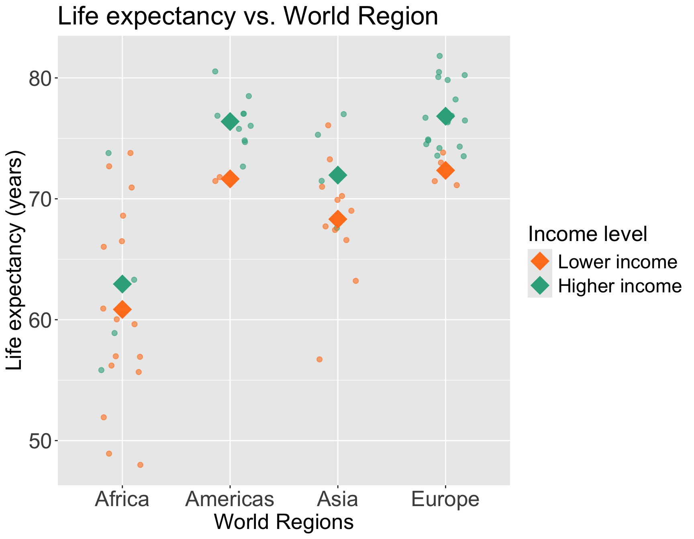
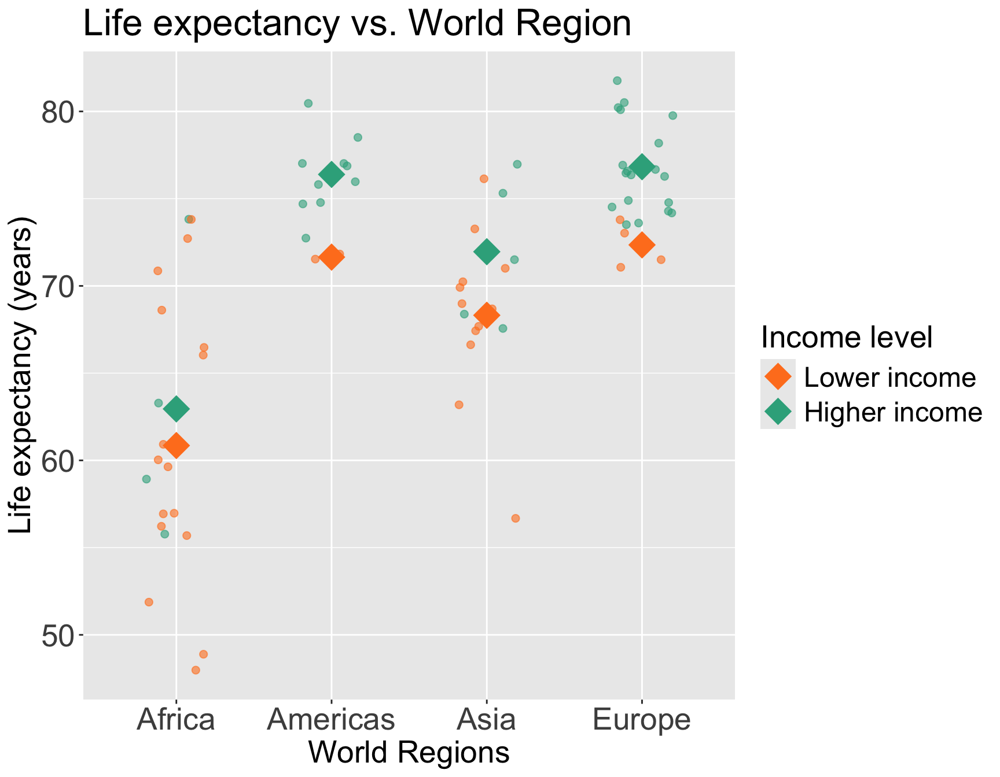

Lesson 11: Interactions Continued
Week 8
Learning Objective
- Interpret the interaction component of a model with two continuous covariates, and how the main variable’s effect changes.
- When there are only two covariates in the model, test whether one is a confounder or effect modifier.
Do we think food supply is an effect modifier for female literacy rate?
We can start by visualizing the relationship between life expectancy and female literacy rate by food supply
Questions of interest: Does the effect of female literacy rate on life expectancy differ depending on food supply?
- This is the same as: Is food supply is an effect modifier for female literacy rate? Is food supply an effect modifier of the association between life expectancy and female literacy rate?
Let’s run an interaction model to see!
Model with interaction between two continuous variables
Model we are fitting:
\[ LE = \beta_0 + \beta_1 FLR^c + \beta_2 FS^c + \beta_3 FLR^c \cdot FS^c + \epsilon\]
- \(LE\) as life expectancy
- \(FLR^c\) as the centered around the mean female literacy rate (continuous variable)
- \(FS^c\) as the centered around the mean food supply (continuous variable)
Code to center FLR and FS
gapm_sub = gapm_sub %>%
mutate(FLR_c = FemaleLiteracyRate - mean(FemaleLiteracyRate),
FS_c = FoodSupplykcPPD - mean(FoodSupplykcPPD))
mean_FS = mean(gapm_sub$FoodSupplykcPPD) %>% round(digits = 0)
mean_FLR = mean(gapm_sub$FemaleLiteracyRate) %>% round(digits = 2)In R:
m_int_fs = lm(LifeExpectancyYrs ~ FLR_c + FS_c + FLR_c*FS_c, data = gapm_sub)OR
m_int_fs = lm(LifeExpectancyYrs ~ FLR_c*FS_c, data = gapm_sub)Displaying the regression table and writing fitted regression equation
tidy_m_fs = tidy(m_int_fs, conf.int=T)
tidy_m_fs %>% gt() %>% tab_options(table.font.size = 35) %>% fmt_number(decimals = 5)| term | estimate | std.error | statistic | p.value | conf.low | conf.high |
|---|---|---|---|---|---|---|
| (Intercept) | 70.32060 | 0.72393 | 97.13721 | 0.00000 | 68.87601 | 71.76518 |
| FLR_c | 0.15532 | 0.03808 | 4.07905 | 0.00012 | 0.07934 | 0.23130 |
| FS_c | 0.00849 | 0.00182 | 4.67908 | 0.00001 | 0.00487 | 0.01212 |
| FLR_c:FS_c | −0.00001 | 0.00008 | −0.06908 | 0.94513 | −0.00016 | 0.00015 |
\[ \begin{aligned} \widehat{LE} = & \widehat\beta_0 + \widehat\beta_1 FLR^c + \widehat\beta_2 FS^c + \widehat\beta_3 FLR^c \cdot FS^c \\ \widehat{LE} = & 70.32 + 0.16 \cdot FLR^c + 0.01 \cdot FS^c - 0.00001 \cdot FLR^c \cdot FS^c \end{aligned}\]
Comparing fitted regression lines for various food supply values
\[ \begin{aligned} \widehat{LE} = & \widehat\beta_0 + \widehat\beta_1 FLR^c + \widehat\beta_2 FS^c + \widehat\beta_3 FLR^c \cdot FS^c \\ \widehat{LE} = & 70.32 + 0.16 \cdot FLR^c + 0.01 \cdot FS^c - 0.00001 \cdot FLR^c \cdot FS^c \end{aligned}\]
To identify different lines, we need to pick example values of Food Supply:
Food Supply of 1812 kcal PPD
\[\begin{aligned} \widehat{LE} = & \widehat\beta_0 + \widehat\beta_1 FLR^c + \\ & \widehat\beta_2 \cdot (-1000) + \\ & \widehat\beta_3 FLR^c \cdot (-1000) \\ \widehat{LE} = & \big(\widehat\beta_0 - 1000 \widehat\beta_2 \big)+ \\ & \big(\widehat\beta_1 - 1000 \widehat\beta_3 \big) FLR^c \end{aligned}\]
Food Supply of 2812 kcal PPD
\[\begin{aligned} \widehat{LE} = & \widehat\beta_0 + \widehat\beta_1 FLR^c + \\ & \widehat\beta_2 \cdot 0 + \\ & \widehat\beta_3 FLR^c \cdot 0 \\ \widehat{LE} = & \big(\widehat\beta_0 \big)+ \\ & \big(\widehat\beta_1 \big) FLR^c \end{aligned}\]
Food Supply of 3812 kcal PPD
\[\begin{aligned} \widehat{LE} = & \widehat\beta_0 + \widehat\beta_1 FLR^c + \\ & \widehat\beta_2 \cdot 1000 + \\ & \widehat\beta_3 FLR^c \cdot 1000 \\ \widehat{LE} = & \big(\widehat\beta_0 + 1000 \widehat\beta_2 \big)+ \\ & \big(\widehat\beta_1 + 1000 \widehat\beta_3 \big) FLR^c \end{aligned}\]
Poll Everywhere Question??
Interpretation for interaction between two continuous variables
\[ \begin{aligned} \widehat{LE} = & \widehat\beta_0 + \widehat\beta_1 FLR^c + \widehat\beta_2 FS^c + \widehat\beta_3 FLR^c \cdot FS^c \\ \widehat{LE} = & \bigg[\widehat\beta_0 + \widehat\beta_2 \cdot FS^c \bigg] + \underbrace{\bigg[\widehat\beta_1 + \widehat\beta_3 \cdot FS^c \bigg]}_\text{FLR's effect} FLR \\ \end{aligned}\]
Interpretation:
- \(\beta_3\) = mean change in female literacy rate’s effect, for every one kcal PPD increase in food supply
In summary, the interaction term can be interpreted as “difference in adjusted female literacy rate effect for every 1 kcal PPD increase in food supply”
It will be helpful to test the interaction to round out this interpretation!!
Test interaction between two continuous variables
- We run an F-test for a single coefficients (\(\beta_3\)) in the below model (see lesson 9)
\[ LE = \beta_0 + \beta_1 FLR^c + \beta_2 FS^c + \beta_3 FLR^c \cdot FS^c + \epsilon\]
Null \(H_0\)
\[\beta_3=0\]
Alternative \(H_1\)
\[\beta_3\neq0\]
Null / Smaller / Reduced model
\[ LE = \beta_0 + \beta_1 FLR^c + \beta_2 FS^c + \epsilon\]
Alternative / Larger / Full model
\[\begin{aligned} LE = & \beta_0 + \beta_1 FLR^c + \beta_2 FS^c + \\ & \beta_3 FLR^c \cdot FS^c + \epsilon \end{aligned}\]
Test interaction between two continuous variables
- Fit the reduced and full model
m_int_fs_red = lm(LifeExpectancyYrs ~ FLR_c + FS_c,
data = gapm_sub)
m_int_fs_full = lm(LifeExpectancyYrs ~ FLR_c + FS_c +
FLR_c*FS_c, data = gapm_sub)Display the ANOVA table with F-statistic and p-value
anova(m_int_fs_red, m_int_fs_full) %>% tidy() %>%
gt() %>% tab_options(table.font.size = 35) %>% fmt_number(decimals = 3)| term | df.residual | rss | df | sumsq | statistic | p.value |
|---|---|---|---|---|---|---|
| LifeExpectancyYrs ~ FLR_c + FS_c | 69.000 | 2,005.556 | NA | NA | NA | NA |
| LifeExpectancyYrs ~ FLR_c + FS_c + FLR_c * FS_c | 68.000 | 2,005.415 | 1.000 | 0.141 | 0.005 | 0.945 |
- Conclusion: There is not a significant interaction between female literacy rate and food supply (p = 0.945). Food supply is not an effect modifier of the association between female literacy rate and life expectancy.
Learning Objective
- Interpret the interaction component of a model with two continuous covariates, and how the main variable’s effect changes.
- When there are only two covariates in the model, test whether one is a confounder or effect modifier.
Deciding between confounder and effect modifier
This is more of a model selection question (in coming lectures)
But if we had a model with only TWO covariates, we could step through the following process:
Test the interaction (of potential effect modifier): use a partial F-test to test if interaction term(s) explain enough variation compared to model without interaction
- Recall that for two continuous covariates, we will test a single coefficient
- For a binary and continuous covariate, we will test a single coefficient
- For two binary categorical covariates, we will test a single coefficient
- For a multi-level categorical covariate (with any other type of covariate), we must test a group of coefficients!!
Then look at the main effect (or potential confounder)
If interaction already included, then automatically included as main effect (and thus not checked for confounding)
For variables that are not included in any interactions:
- Check to see if they are confounders by seeing whether exclusion of the variable changes any of the main effect of the primary explanatory variable by more than 10%
Reminder from Lesson 9: General steps for F-test
- Met underlying LINE assumptions
- State the null hypothesis
- Specify the significance level.
Often we use \(\alpha = 0.05\)
- Specify the test statistic and its distribution under the null
The test statistic is \(F\), and follows an F-distribution with numerator \(df=k\) and denominator \(df=n-k-1\). (\(n\) = # obversation, \(k\) = # covariates)
- Compute the value of the test statistic
The calculated test statistic is
\[F^ = \dfrac{\frac{SSE(R) - SSE(F)}{df_R - df_F}}{\frac{SSE(F)}{df_F}} = \frac{MSR_{full}}{MSE_{full}}\]
- Calculate the p-value
We are generally calculating: \(P(F_{k, n-k-1} > F)\)
- Write conclusion for hypothesis test
We (reject/fail to reject) the null hypothesis at the \(100\alpha\%\) significance level.
Step 1: Testing the interaction
We test with \(\alpha = 0.10\)
Follow the F-test procedure in Lesson 9 (MLR: Inference/F-test)
- This means we need to follow the 7 steps of the general F-test in previous slide (taken from Lesson 9)
Use the hypothesis tests for the specific variable combo:
Binary & continuous variable (Lesson 11, LOB 2)
Testing a single coefficient for the interaction term using F-test comparing full model to reduced model
Multi-level & continuous variables (Lesson 11, LOB 3)
Testing group of coefficients for the interaction terms using F-test comparing full to reduced model
Binary & multi-level variable (Lesson 11, LOB 4)
Testing group of coefficients for the interaction terms using F-test comparing full to reduced model
Two continuous variables (Lesson 11, LOB 5)
Testing a single coefficient for the interaction term using F-test comparing full to reduced model
Poll Everywhere Questions 2-4
Step 2: Testing a confounder
If interaction already included:
- Meaning: F-test showed evidence for alternative/full model
- Then the variable is an effect modifier and we don’t need to consider it as a confounder
- Then automatically included as main effect (and thus not checked for confounding)
For variables that are not included in any interactions:
- Check to see if they are confounders
- One way to do this is by seeing whether exclusion of the variable changes any of the main effect of the primary explanatory variable by more than 10%
If the main effect of the primary explanatory variable changes by less than 10%, then the additional variable is neither an effect modifier nor a confounder
- We leave the variable out of the model
Testing for percent change ( \(\Delta\%\)) in a coefficient
Let’s say we have \(X_1\) and \(X_2\), and we specifically want to see if \(X_2\) is a confounder for \(X_1\) (the explanatory variable or variable of interest)
If we are only considering \(X_1\) and \(X_2\), then we need to run the following two models:
Fitted model 1 / reduced model (
mod1): \(\widehat{Y} = \widehat\beta_0 + \widehat\beta_1X_1\)- We call the above \(\widehat\beta_1\) the reduced model coefficient: \(\widehat\beta_{1, \text{mod1}}\) or \(\widehat\beta_{1, \text{red}}\)
Fitted model 2 / Full model (
mod2): \(\widehat{Y} = \widehat\beta_0 + \widehat\beta_1X_1 +\widehat\beta_2X_2\)- We call this \(\widehat\beta_1\) the full model coefficient: \(\widehat\beta_{1, \text{mod2}}\) or \(\widehat\beta_{1, \text{full}}\)
Calculation for % change in coefficient
\[ \Delta\% = 100\% \cdot\frac{\widehat\beta_{1, \text{mod1}} - \widehat\beta_{1, \text{mod2}}}{\widehat\beta_{1, \text{mod2}}} = 100\% \cdot \frac{\widehat\beta_{1, \text{red}} - \widehat\beta_{1, \text{full}}}{\widehat\beta_{1, \text{full}}} \]
Is food supply a confounder for female literacy rate? (1/3)
Run models with and without food supply:
- Model 1 (reduced): \(LE = \beta_0 + \beta_1 FLR^c + \epsilon\)
mod1_red = lm(LifeExpectancyYrs ~ FLR_c, data = gapm_sub)- Model 2 (full): \(LE = \beta_0 + \beta_1 FLR^c + \beta_2 FS^c + \epsilon\)
mod2_full = lm(LifeExpectancyYrs ~ FLR_c + FS_c, data = gapm_sub)
Note that the full model when testing for confounding was the reduced model for testing an interaction
Full and reduced are always relative qualifiers of the models that we are testing
Is food supply a confounder for female literacy rate? (2/3)
- Record the coefficient estimate for centered female literacy rate in both models:
- Model 1 (reduced):
tidy(mod1_red, conf.int=T) %>% gt() %>% tab_options(table.font.size = 35) %>% fmt_number(decimals = 5)| term | estimate | std.error | statistic | p.value | conf.low | conf.high |
|---|---|---|---|---|---|---|
| (Intercept) | 70.29722 | 0.72578 | 96.85709 | 0.00000 | 68.84969 | 71.74475 |
| FLR_c | 0.22990 | 0.03219 | 7.14139 | 0.00000 | 0.16570 | 0.29411 |
- Model 2 (full):
tidy(mod2_full, conf.int=T) %>% gt() %>% tab_options(table.font.size = 35) %>% fmt_number(decimals = 5)| term | estimate | std.error | statistic | p.value | conf.low | conf.high |
|---|---|---|---|---|---|---|
| (Intercept) | 70.29722 | 0.63537 | 110.63985 | 0.00000 | 69.02969 | 71.56475 |
| FLR_c | 0.15670 | 0.03216 | 4.87271 | 0.00001 | 0.09254 | 0.22085 |
| FS_c | 0.00848 | 0.00179 | 4.72646 | 0.00001 | 0.00490 | 0.01206 |
- Calculate the percent change:
\[ \Delta\% = 100\% \cdot \frac{\widehat\beta_{1, \text{mod1}} - \widehat\beta_{1, \text{mod2}}}{\widehat\beta_{1, \text{mod2}}} = 100\% \cdot \frac{0.22990 - 0.15670}{0.15670} = 46.71\% \]
Is food supply a confounder for female literacy rate? (3/3)
The percent change in female literacy rate’s coefficient estimate was 46.71%.
Thus, food supply is a confounder of female literacy rate in the association between life expectancy and female literacy rate.
Let’s try this out on one of our potential effect modifiers or confounders
Look back at income level and world region: is income level an effect modifier, confounder, or has no effect on the association between life expectancy and world region?
We can start by visualizing the relationship between life expectancy and world region by income level
So we’ll need to revisit the work we did in previous slides on the interaction, then check fo condounding

Determining if income level is an effect modifier, confounder, or neither
Step 1: Testing the interaction/effect modifier
Compare model with and without interaction using F-test to see if interaction is significant
Models
- Model 1 (red): \(\begin{aligned}LE = &\beta_0 + \beta_1 I(\text{Americas}) + \beta_2 I(\text{Asia}) + \beta_3 I(\text{Europe}) + \beta_4 I(\text{high income})+ \epsilon \end{aligned}\)
- Model 2 (full): \(\begin{aligned}LE = &\beta_0 + \beta_1 I(\text{Americas}) + \beta_2 I(\text{Asia}) + \beta_3 I(\text{Europe}) + \beta_4 I(\text{high income})+ \\ & \beta_5 \cdot I(\text{high income}) \cdot I(\text{Americas}) + \beta_6\cdot I(\text{high income}) \cdot I(\text{Asia})+ \\ & \beta_7 \cdot I(\text{high income})\cdot I(\text{Europe})+ \epsilon \end{aligned}\)
Step 2: Testing a confounder (only if not an effect modifier)
Compare model with and without main effect for additional variable (income level) using F-test to see if additional variable (income level) is a confounder
Models
- Model 1 (reduced): \(\begin{aligned}LE = &\beta_0 + \beta_1 I(\text{Americas}) + \beta_2 I(\text{Asia}) + \beta_3 I(\text{Europe}) + \epsilon \end{aligned}\)
- Model 2 (full): \(\begin{aligned}LE = &\beta_0 + \beta_1 I(\text{Americas}) + \beta_2 I(\text{Asia}) + \beta_3 I(\text{Europe}) + \beta_4 I(\text{high income})+ \epsilon \end{aligned}\)
Step 1: Results from Lesson 11 LOB 4
- Fit the reduced and full model
m_int_wr_inc_red = lm(LifeExpectancyYrs ~ income_levels2 + four_regions,
data = gapm_sub)
m_int_wr_inc_full = lm(LifeExpectancyYrs ~ income_levels2 + four_regions +
income_levels2*four_regions, data = gapm_sub)- Display the ANOVA table with F-statistic and p-value
anova(m_int_wr_inc_red, m_int_wr_inc_full) %>% tidy() %>% gt() %>% tab_options(table.font.size = 35) %>% fmt_number(decimals = 3)| term | df.residual | rss | df | sumsq | statistic | p.value |
|---|---|---|---|---|---|---|
| LifeExpectancyYrs ~ income_levels2 + four_regions | 67.000 | 1,693.242 | NA | NA | NA | NA |
| LifeExpectancyYrs ~ income_levels2 + four_regions + income_levels2 * four_regions | 64.000 | 1,681.304 | 3.000 | 11.938 | 0.151 | 0.928 |
# newdata <- data.frame(four_regions = c("Africa", "Americas", "Asia", "Europe"),
# FLR_c = c())
# (pred = predict(m_int_wr_full,
# newdata=newdata,
# interval="confidence"))Conclusion: There is not a significant interaction between world region and income level (p = 0.928).
Thus, income level is not an effect modifier of world region. However, we can continue to test if income level is a confounder.
Step 2: See if income is a confounder
- Fit the reduced and full model for testing the confounder
- Model 1 (reduced): \(\begin{aligned}LE = &\beta_0 + \beta_1 I(\text{Americas}) + \beta_2 I(\text{Asia}) + \beta_3 I(\text{Europe}) + \epsilon \end{aligned}\)
mod1_wr_inc_red = lm(LifeExpectancyYrs ~ four_regions,
data = gapm_sub)
- Model 2 (full): \(\begin{aligned}LE = &\beta_0 + \beta_1 I(\text{Americas}) + \beta_2 I(\text{Asia}) + \beta_3 I(\text{Europe}) + \beta_4 I(\text{high income})+ \epsilon \end{aligned}\)
mod1_wr_inc_full = lm(LifeExpectancyYrs ~ four_regions + income_levels2,
data = gapm_sub)Step 2: See if income is a confounder
Record the coefficient estimate for centered female literacy rate in both models:
Model 1 (reduced):\(\begin{aligned}\widehat{LE} = &\widehat\beta_0 + \widehat\beta_1 I(\text{Americas}) + \widehat\beta_2 I(\text{Asia}) + \widehat\beta_3 I(\text{Europe}) \end{aligned}\)
tidy(mod1_wr_inc_red, conf.int=T) %>% gt() %>% tab_options(table.font.size = 35) %>% fmt_number(decimals = 5)| term | estimate | std.error | statistic | p.value | conf.low | conf.high |
|---|---|---|---|---|---|---|
| (Intercept) | 61.27000 | 1.16508 | 52.58870 | 0.00000 | 58.94512 | 63.59488 |
| four_regionsAmericas | 14.33000 | 1.90257 | 7.53193 | 0.00000 | 10.53349 | 18.12651 |
| four_regionsAsia | 8.11824 | 1.71883 | 4.72313 | 0.00001 | 4.68837 | 11.54810 |
| four_regionsEurope | 14.78217 | 1.59304 | 9.27924 | 0.00000 | 11.60332 | 17.96103 |
- Model 2 (full): \(\begin{aligned}\widehat{LE} = &\widehat\beta_0 + \widehat\beta_1 I(\text{Americas}) + \widehat\beta_2 I(\text{Asia}) + \widehat\beta_3 I(\text{Europe}) + \widehat\beta_4 I(\text{high income})\end{aligned}\)
tidy(mod1_wr_inc_full, conf.int=T) %>% gt() %>% tab_options(table.font.size = 35) %>% fmt_number(decimals = 5)| term | estimate | std.error | statistic | p.value | conf.low | conf.high |
|---|---|---|---|---|---|---|
| (Intercept) | 60.54716 | 1.16190 | 52.11048 | 0.00000 | 58.22800 | 62.86632 |
| four_regionsAmericas | 12.04102 | 2.05816 | 5.85038 | 0.00000 | 7.93292 | 16.14912 |
| four_regionsAsia | 7.77808 | 1.66414 | 4.67394 | 0.00001 | 4.45645 | 11.09971 |
| four_regionsEurope | 12.51938 | 1.79139 | 6.98864 | 0.00000 | 8.94375 | 16.09501 |
| income_levels2Higher income | 3.61419 | 1.46967 | 2.45917 | 0.01651 | 0.68070 | 6.54767 |
Step 2: See if income is a confounder
Calculate the percent change for \(\widehat\beta_1\): \[ \Delta\% = 100\% \cdot \frac{\widehat\beta_{1, \text{mod1}} - \widehat\beta_{1, \text{mod2}}}{\widehat\beta_{1, \text{mod2}}} = 100\% \cdot \frac{14.33000 - 12.04102}{12.04102} = 19.01 \]
Calculate the percent change for \(\widehat\beta_2\): \[ \Delta\% = 100\% \cdot \frac{\widehat\beta_{2, \text{mod1}} - \widehat\beta_{2, \text{mod2}}}{\widehat\beta_{2, \text{mod2}}} = 100\% \cdot \frac{8.11824 - 7.77808}{7.77808} = 4.37 \]
Calculate the percent change for \(\widehat\beta_3\): \[ \Delta\% = 100\% \cdot \frac{\widehat\beta_{3, \text{mod1}} - \widehat\beta_{3, \text{mod2}}}{\widehat\beta_{3, \text{mod2}}} = 100\% \cdot \frac{14.78217 - 12.51938}{12.51938} = 18.07 \]
Note that two of these % changes are greater than 10%, and one is less than 10%…
Step 2: See if income is a confounder
There is no set rule when we have more than one estimated coefficient that we examine for confoundeing
In this, I would consider
- The majority of coefficients (2/3 coefficients) changes more than 10%
- The change in coefficients for all three are in the same direction
- The plot of life expectancy vs world region by income level have a shift in mean life expectancy from lower to higher income level
Thus, I would conclude that income level is a confounder, so we would leave income level’s main effect in the model

If you want extra practice
- Try out this procedure to determine if a variable is an effect modifier or confounder or nothing on the other interactions we tested out in Lesson 11
Extra Reference Material
General interpretation of the interaction term (reference)
\(E[Y\mid X_{1},X_{2} ]=\beta_0 + \underbrace{(\beta_1+\beta_3X_{2}) }_\text{$X_{1}$'s effect} X_{1}+ \underbrace{\beta_2X_{2}}_\text{$X_{2}$ held constant}\)
\({\color{white}{E[Y\mid X_{1},X_{2} ]}}=\beta_0 + \underbrace{(\beta_2+\beta_3X_{1}) }_\text{$X_{2}$'s effect}X_{2} + \underbrace{\beta_1X_{1}}_\text{$X_{1}$ held constant}\)
Interpretation:
\(\beta_3\) = mean change in \(X_{1}\)’s effect, per unit increase in \(X_{2}\);
\(\beta_3\) = mean change in \(X_{2}\)’s effect, per unit increase in \(X_{1}\);
where the “\(X_{1}\) effect” equals the change in \(E[Y]\) per unit increase in \(X_{1}\) with \(X_{2}\) held constant, i.e. “adjusted \(X_{1}\) effect”
In summary, the interaction term can be interpreted as “difference in adjusted \(X_1\) (or \(X_2\)) effect per unit increase in \(X_2\) (or \(X_1\))”
A glimpse at how interactions might be incorporated into model selection
Identify outcome (Y) and primary explanatory (X) variables
Decide which other variables might be important and could be potential confounders. Add these to the model.
- This is often done by indentifying variables that previous research deemed important, or researchers believe could be important
- From a statistical perspective, we often include variables that are significantly associated with the outcome (in their respective SLR)
(Optional step) Test 3 way interactions
- This makes our model incredibly hard to interpret. Our class will not cover this!!
- We will skip to testing 2 way interactions
Test 2 way interactions
When testing a 2 way interaction, make sure the full and reduced models contain the main effects
First test all the 2 way interactions together using a partial F-test (with \(alpha = 0.10\))
- If this test not significant, do not test 2-way interactions individually
- If partial F-test is significant, then test each of the 2-way interactions
Remaining main effects - to include of not to include?
For variables that are included in any interactions, they will be automatically included as main effects and thus not checked for confounding
For variables that are not included in any interactions:
Check to see if they are confounders by seeing whether exclusion of the variable(s) changes any of the coefficient of the primary explanatory variable (including interactions) X by more than 10%
- If any of X’s coefficients change when removing the potential confounder, then keep it in the model